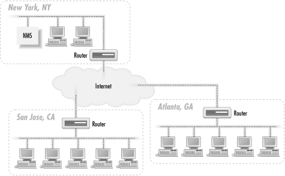
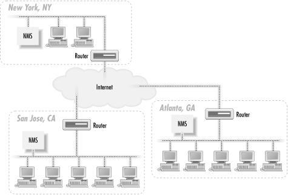
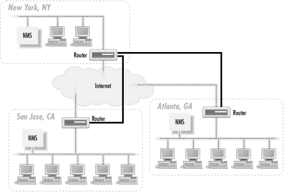

3.2. NMS Architectures
Before
going out and buying all your equipment, it's worth spending
some time coming up with an architecture for your network that will
make it more manageable. The simplest architecture has a single
management station that is responsible for the entire network, as
shown in Figure 3-1.

Figure 3-1. Single NMS architecture
The network depicted in Figure 3-1 has three sites: New York, Atlanta, and San
Jose. The NMS in New York is responsible for managing not only the
portion of the network in New York, but also those in Atlanta and San
Jose. Traps sent from any device in Atlanta or San Jose must travel
over the Internet to get to the NMS in New York. The same thing goes
for polling devices in San Jose and Atlanta: the NMS in New York must
send its requests over the Internet to reach these remote sites. For
small networks, an architecture like this can work well. However,
when the network grows to the point that a single NMS can no longer
manage everything, this architecture becomes a real problem. The NMS
in New York can get behind in its polling of the remote sites, mainly
because it has so much to manage. The result is that when problems
arise at a remote site, they may not get noticed for some time. In
the worst case, they might not get noticed at all.
It's also worth
thinking about staffing. With a single NMS, your primary operations
staff would be in New York, watching the health of the network. But
problems frequently require somebody onsite to intervene. This
requires someone in Atlanta and San Jose, plus the coordination that
entails. You may not need a full-time network administrator, but you
will need someone who knows what to do when a router fails.
When your network grows to a
point where one NMS can no longer manage everything, it's time
to move to a distributed NMS architecture. The idea behind this
architecture is simple: use two or more management stations and
locate them as close as possible to the nodes they are managing. In
the case of our three-site network, we would have an NMS at each
site. Figure 3-2 shows the addition of two NMSs to
the network.

Figure 3-2. Distributed NMS architecture
This
architecture has several advantages, not the least of which is
flexibility. With the new architecture, the NMSs in Atlanta and San
Jose can act as standalone management stations, each with a fully
self-sufficient staff, or they can forward events to the NMS in New
York. If the remote NMSs forward all events to the NMS in New York,
there is no need to put additional operations staff in Atlanta and
San Jose. At first glance this looks like we've returned to the
situation of Figure 3-1, but that isn't quite
true. Most NMS products provide some kind of client interface to
viewing the events currently in the NMS (traps received, responses to
polls, etc.). Since the NMS that forwards events to New York has
already discovered the problem, we're simply letting the NMS in
New York know about it so it can be dealt with appropriately. The New
York NMS didn't have to use valuable resources to poll the
remote network to discover that there was a problem.
The
other advantage is that if the need arises you can put operations
staff in Atlanta and San Jose to manage each of these remote
locations. If New York loses connectivity to the Internet, events
forwarded from Atlanta or San Jose will not make it to New York. With
operations staff in Atlanta and San Jose, and the NMSs at these
locations acting in standalone mode, a network outage in New York
won't matter. The remote-location staff will continue on as if
nothing has happened.
Another possibility with this
architecture is a hybrid mode: you staff the operations center in New
York 24 hours a day, 7 days a week, but you staff Atlanta and San
Jose only during business hours. During off-hours, they rely on the
NMS and operations staff in New York to notice and handle problems
that arise. But during the critical (and busiest) hours of the day,
Atlanta and San Jose don't have to burden the New York
operators.
Both of the architectures we
have discussed use the Internet to send and receive management
traffic. This poses several problems, mainly dealing with security
and overall reliability. A better solution is to use private links to
perform all your network-management functions. Figure 3-3 shows how the distributed NMS architecture can
be extended to make use of such links.

Figure 3-3. Using private links for network management
Let's say that New York's router is the core router for
the network. We establish private (but not necessarily high-speed)
links between San Jose and New York, and between New York and
Atlanta. This means that San Jose will not only be able to reach New
York, but it will also be able to reach Atlanta via New York. Atlanta
will use New York to reach San Jose, too. The private links (denoted
by thicker router-to-router connections) are primarily devoted to
management traffic, though we could put them to other uses. Using
private links has the added benefit that our community strings are
never sent out over the Internet. The use of private network links
for network management works equally well with the single NMS
architecture, too. Of course, if your corporate network consists
entirely of private links and your Internet connections are devoted
to external traffic only, using private links for your management
traffic is the proverbial "no-brainer."
One final item worth mentioning is the
notion of trap-directed polling. This doesn't really have
anything to do with NMS architecture, but it can help to alleviate an
NMS's management strain. The idea behind trap-directed polling
is simple: the NMS receives a trap and initiates a poll to the device
that generated the trap. The goal of this scenario is to determine if
there is indeed a problem with the device, while allowing the NMS to
ignore (or devote few resources to) the device in normal operation.
If an organization relies on this form of management, it should
implement it in such a way that non-trap-directed polling is almost
done away with. That is, it should avoid polling devices at regular
intervals for status information. Instead, the management stations
should simply wait to receive a trap before polling a device. This
form of management can significantly reduce the resources needed by
an NMS to manage a network. However, it has an important
disadvantage: traps can get lost in the network and never make it to
the NMS. This is a reality of the connectionless nature of UDP and
the imperfect nature of networks.
 |  |  |
| 3. NMS Architectures |  | 3.3. A Look Ahead |

Copyright © 2002 O'Reilly & Associates. All rights reserved.